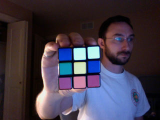

Sampled Average Color
(dist. from center color)
Saturation vs. Hue
Clear before sample
Capture
Continuous
Stop
(You can use SPACE bar to capture)
Copy Test Image
(1) Blur
(2) Sobel
(3) Blob Detect
blue:
not square blob
green:
square blob, not grid detected
red:
square blob, grid detected
